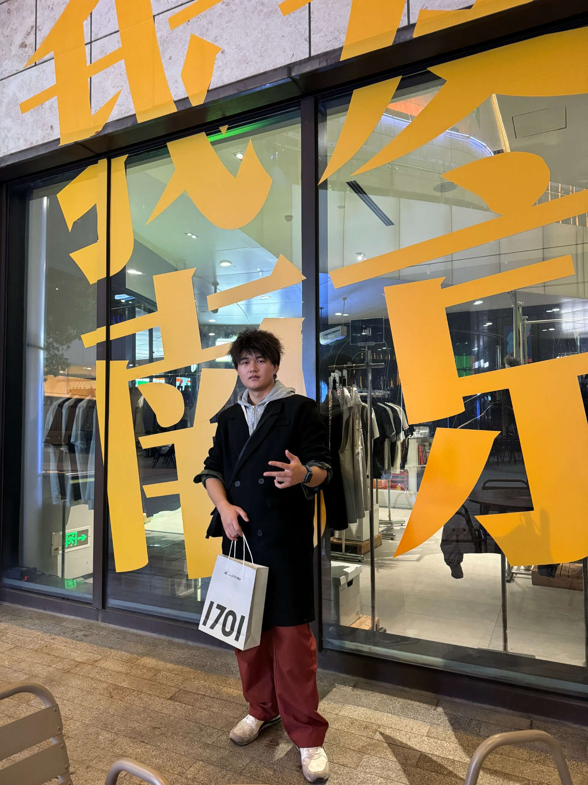
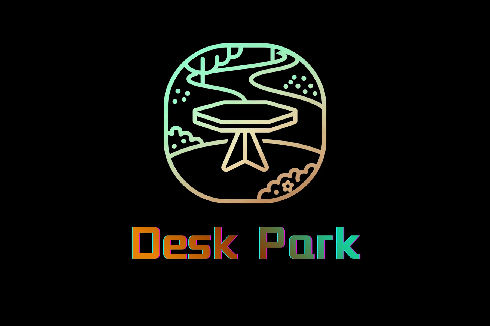
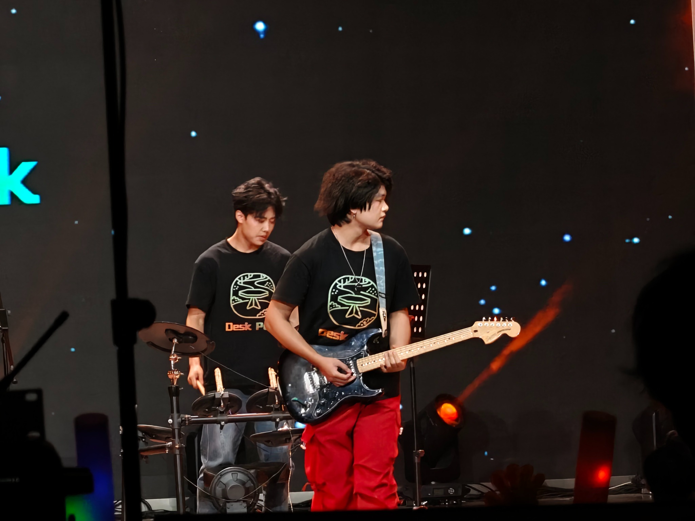
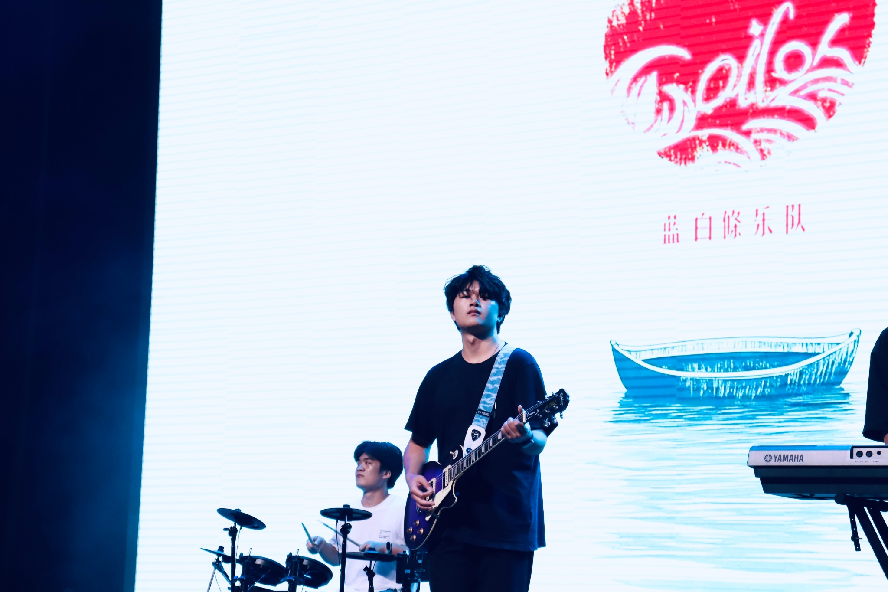
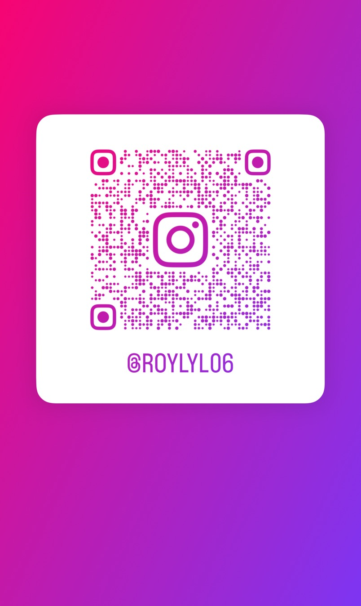
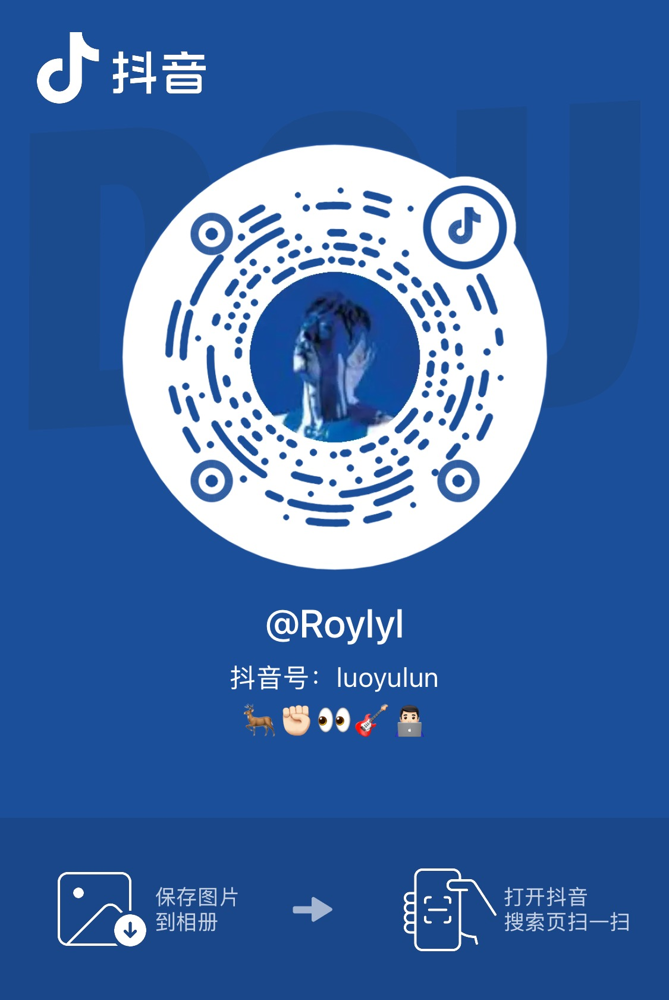

嵌入式开发
以 ESP32 为主，进行蓝牙音频、基础控制逻辑与原型功能验证。
HARDWARE · EMBEDDED · ENGINEERING PORTFOLIO
我是罗宇伦，湖南农业大学卓越工程师学院本科生。当前重点方向是硬件开发、嵌入式系统、样机实现与工程验证。 长期的音乐与音频实践，也让我在延迟、底噪、动态响应和交互体验上保持更敏锐的感知。

硬件调试、样机搭建、基础 PCB 设计与系统联调。
长期乐队演出与音频设备实践，让我能从真实使用场景理解音频产品。
ABOUT
以 ESP32 为主，进行蓝牙音频、基础控制逻辑与原型功能验证。
样机搭建、功放电路实验、硬件调试、系统联调与现场展示。
能够在学生项目中承担负责人角色，推进分工、验证与展示落地。
长期乐队演出与设备使用，让我对延迟、底噪、动态响应等更敏感。
FEATURED PROJECTS
SKILLS
ESP32、Arduino、ESP-IDF 学习实践，进行原型功能验证与基础嵌入式开发。
基础 PCB 设计、硬件调试、样机搭建、功放联调、现场功能验证与展示。
从概念、分工到原型展示的完整推进能力，能在学生项目中承担负责人角色。
音乐与音频设备实践让我能从使用者视角理解延迟、底噪、动态响应与交互体验。
PRODUCT & ENTREPRENEURSHIP PHILOSOPHY
PRODUCT PHILOSOPHY
我更关心产品是否真正改善了使用体验，而不是参数是否足够夸张。对初创团队而言，很多机会并不来自重新发明底层技术，而来自把成熟技术重新组合，用新的交互和结构去解决被忽略的具体场景。
ENTREPRENEURSHIP
我不把商业落地和技术理想看成冲突关系。早期团队资源有限，应该先做技术门槛可控、供应链成熟、用户明确的产品，获得现金流、制造经验和市场认知，再把这些积累投入更长期、更困难的技术方向。
MUSIC · SECONDARY

我长期进行乐队排练与现场演出，熟悉电吉他、效果器、监听系统和 DAW 工作流。这些实践也持续反哺我对音频产品、设备交互和真实使用体验的理解。


SOCIAL
更多联系方式与社交媒体。
微信
扫码添加好友，适合项目交流与日常联系。
Instagram
@ROYLYL06

抖音
@Roylyl · 抖音号：luoyulun
